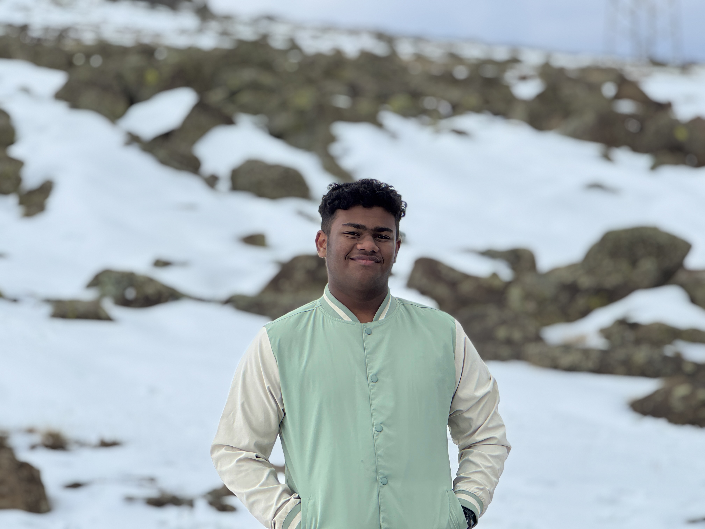

Open to internships and collaborations
Computer science student at MITS Kochi. I build backend systems, break things to learn security, and lead a 20-person student tech collective. Scored 96.9 percentile in JEE Main 2026.
I build

I like understanding how complex systems fit together, whether that is a distributed service, a seat-locking engine, or the spec sheet of a car.
I am a B.Tech CSE student in the Elevate cohort at MITS Kochi, studying the IIT Madras BS in Data Science alongside, and training in full-stack engineering and software architecture at 100x School.
My focus is backend systems, cybersecurity and machine learning, with a steady eye on aviation and automotive technology.
Projects from GitHub and the CodeKootu lab. Filter by topic or search.
A 4-node distributed microservice system with dynamic Go DNS service discovery and zero hardcoded IPs. Includes anti-hijack validation and brute-force rate limiting.
SourceA high-concurrency seat reservation engine with safe seat locking and a transactional booking workflow.
SourceFlight control logic, sensor telemetry and path planning, built for a drone design competition.
SourceExploratory analysis, K-Means clustering and Decision Tree classification on how lifestyle habits affect health risk.
SourceFlood and landslide prevention: automated shutters and live water-level sensing redirect runoff into reinforced underground storage.
Custom organisational email and DNS routing that follows dynamic client IP addresses without hardcoded endpoints.
VisitA hostel storytelling initiative with its own circular yellow emblem and visual identity.
No projects match. Clear the search or pick All.
I co-founded and lead this student-run technical collective. Five wings, more than twenty members, one shared lab.
Web platforms, backends and tools.
Security and infrastructure.
Hardware and embedded builds.
Mechanical and structural design.
Outreach, film and design.
Education and campus roles, newest first.
Subcommittee member.
Elected for S1 CSE Section B, MITS Kochi.
Client-server real-time system coding competition at MITS.
Core computer science, with the IIT Madras BS in Data Science and Applications alongside.
Full-stack engineering and software architecture.
Preceded by a 92/100 in Class 12 Computer Science.
Logos, posters, websites and campaigns. Also runs the Noel’s Vlog YouTube channel.
I shoot and edit in DaVinci Resolve, and I took part in the Voyage in Frames photography competition at Anchorage 2026.
A travel film trip through Srinagar, Pahalgam, Gulmarg, Sonamarg and Nigeen Lake.
Avgeek at heart. I collect diecast cars, from the Bugatti Chiron to the Nissan GT-R, and follow aviation and automotive engineering closely.
About ten years, before moving to Kerala. Cinema in English, Malayalam and Tamil, and football.
Selected certificates.
Open to internships, collaborations and good conversations.
noelvmathews@gmail.com